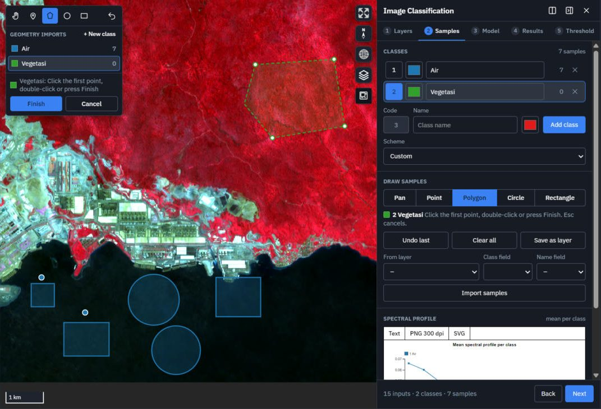
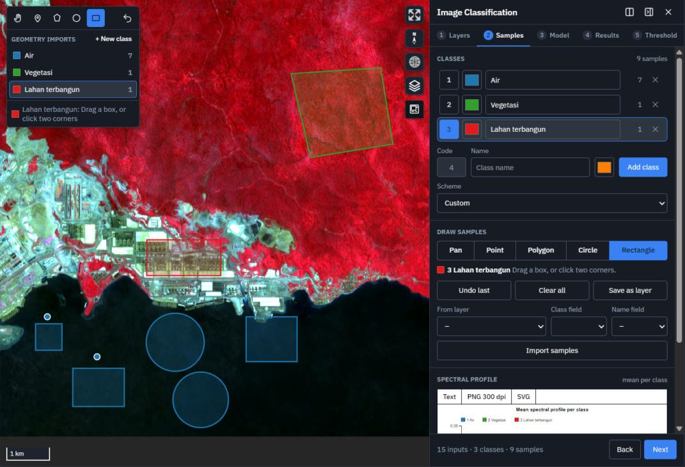
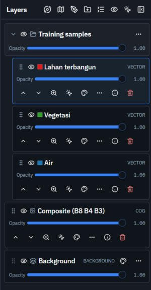

Sampel latih adalah titik atau area di citra yang Anda tandai sebagai contoh tiap kelas tutupan lahan. Tutorial ini memakai citra Sentinel-2 Teluk Weda, Halmahera, dengan tiga kelas: Air, Vegetasi, dan Lahan terbangun.
Di bilah menu atas, klik Image Classification lalu Image Classification…. Panel terbuka di sisi kanan, dan toolbar gambar muncul di kiri atas peta.
Kalau menu itu belum ada, aktifkan pluginnya dulu lewat Plugins → Installed → Image Classification.
Di tab 1 Layers, klik Add folder… dan pilih folder berisi band GeoTIFF (misalnya B2 sampai B12), atau Add files… untuk memilih berkasnya satu per satu. Layer raster yang sudah ada di peta ikut terdaftar otomatis.
Supaya ada latar untuk menggambar, gulir ke Show on map, pilih komposit RGB (misalnya B8 B4 B3 agar vegetasi tampak merah), lalu tampilkan di peta.
Buka tab 2 Samples. Ketik nama kelas di kolom Name, pilih warnanya, lalu klik Add class. Ulangi untuk tiap kelas.
Klik kelas yang ingin diberi sampel di daftar Geometry imports. Kelas yang aktif diberi bingkai. Lalu pilih salah satu alat di baris ikon toolbar.
| Alat | Cara memakai |
|---|---|
| Tangan | Tarik untuk menggeser citra. Tidak menggambar apa pun. |
| Point | Klik sekali di peta. Satu klik menjadi satu sampel titik. |
| Polygon | Klik tiap sudut. Selesaikan dengan klik titik pertama, klik ganda, tombol Enter, atau tombol Finish. |
| Circle | Tarik dari titik pusat ke luar lalu lepas. Bisa juga klik pusat, lalu klik lagi untuk jari-jarinya. |
| Rectangle | Tarik sebuah kotak lalu lepas. Bisa juga klik dua sudut yang berseberangan. |

Begitu sebuah bentuk selesai, sampel langsung tampil di peta dengan warna kelasnya, dan angka di samping nama kelas bertambah. Tiap kelas menjadi satu layer di grup Training samples pada panel Layers, sehingga ikut tersimpan bersama proyek.


Di bagian bawah tab Samples, grafik Spectral profile menampilkan rata-rata nilai tiap band per kelas dan diperbarui setiap Anda menambah sampel. Kelas yang garisnya saling berimpit akan sulit dibedakan oleh model.
Setelah minimal dua kelas punya sampel, klik Next untuk ke tab 3 Model. Pilih algoritma (Random Forest, Gradient Tree Boost, atau SVM), atur jumlah pohon dan rasio latih/uji, lalu jalankan klasifikasi.